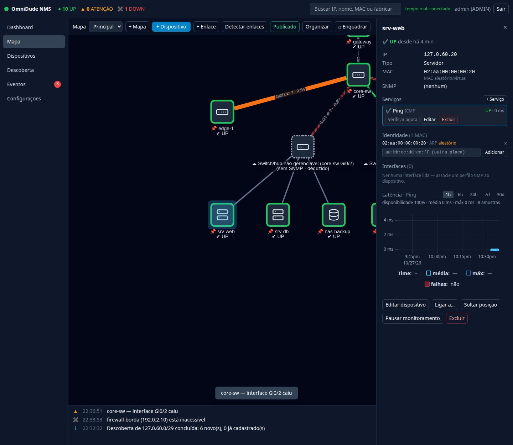
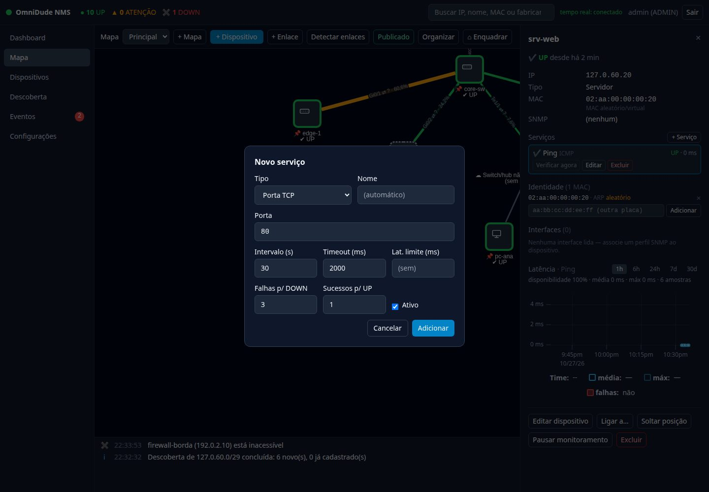

O que é uma checagem#
Uma checagem (ou serviço) é um teste que o OmniDude repete em intervalos regulares contra um dispositivo. O resultado de cada execução alimenta o estado do serviço, o gráfico de latência e os eventos. Todo dispositivo ganha um Ping ao ser criado; os demais serviços entram por + Serviço no inspetor.


Tipos de checagem#
| Tipo | O que testa | Parâmetros |
|---|---|---|
| Ping (ICMP) | Resposta ao ping do sistema operacional. | nenhum |
| Porta TCP | Se a conexão TCP na porta é aceita. | porta |
| HTTP / HTTPS | Se o serviço web responde (sem seguir redirecionamentos). | caminho, método (GET ou HEAD), status aceitos (padrão 200-399), texto esperado (só com GET), verificar certificado TLS (HTTPS) |
| DNS | Se o dispositivo, como servidor DNS, responde NOERROR com registros. | nome a consultar, tipo de registro (padrão A) |
| SNMP (sysUpTime) | Se o agente SNMP responde, usando o perfil do dispositivo. | porta (padrão 161) |
Só pode haver um Ping por dispositivo. A checagem HTTP envia o endereço do dispositivo como alvo: o cabeçalho Host não pode ser definido, então hosts virtuais por nome não são testáveis.
Criar um serviço#
- Abra o inspetor do dispositivo e clique em + Serviço.
- Escolha o tipo e a porta. Os padrões já vêm preenchidos (por exemplo, HTTP na 80, com timeout de 5 s).
- Ajuste, se preciso, o intervalo, o timeout e os limites (veja abaixo) e clique em Adicionar.


Intervalo, timeout e limites#
| Campo | Padrão | Função |
|---|---|---|
| Intervalo (s) | 30 | De quanto em quanto tempo testar. |
| Timeout (ms) | 2000 (HTTP/HTTPS: 5000) | Quanto esperar pela resposta. |
| Lat. limite (ms) | (sem) | Resposta acima disso põe o serviço em ATENÇÃO. |
| Falhas p/ DOWN | 3 | Falhas seguidas antes de declarar DOWN. |
| Sucessos p/ UP | 1 | Sucessos seguidos antes de voltar a UP. |
| Ativo | sim | Desmarque para suspender só este serviço. |
Os padrões de intervalo e timeout de uma checagem nova são ajustáveis em Configurações → Ajustes e manutenção; as checagens existentes não mudam.
Como o estado muda (histerese)#
Uma única perda de pacote não deve derrubar um dispositivo. Por isso o estado usa histerese: o serviço só vira DOWN após N falhas seguidas e só volta a UP após M sucessos seguidos.
- Cada execução bem-sucedida zera a contagem de falhas, e vice-versa.
- Se o serviço responde mas acima do limite de latência, ele fica em ATENÇÃO.
- Com os padrões (30 s de intervalo e 3 falhas), uma queda é declarada em cerca de 90 segundos. Para detectar mais rápido, reduza o intervalo ou o número de falhas, ao custo de mais alarmes falsos.
A checagem âncora#
O estado do dispositivo vem da checagem âncora: o Ping; se não houver, o SNMP.
| Âncora | Outros serviços | Estado do dispositivo |
|---|---|---|
| DOWN | qualquer | DOWN |
| UP | todos bem | UP |
| UP | algum DOWN ou lento | ATENÇÃO |
| sem resultado | qualquer | DESCONHECIDO |
Supressão de alertas: com o dispositivo DOWN, só a âncora continua sendo checada e as falhas dos outros serviços não geram eventos. Assim, uma queda de switch não vira dezenas de mensagens sobre os servidores atrás dele.
Verificar agora e editar#
Em cada serviço do inspetor:
- Verificar agora executa a checagem na hora e mostra o resultado, sem esperar o próximo ciclo.
- Editar muda os parâmetros (o tipo não muda).
- Excluir remove o serviço e o histórico dele.
Gráfico de latência#
Clique num serviço no inspetor para ver o gráfico dele. O seletor escolhe a janela: 1 h, 6 h, 24 h, 7 d ou 30 d.
- A linha azul é a média do intervalo; a tracejada, o máximo.
- Barras vermelhas marcam intervalos com falhas; lacunas na linha são períodos sem nenhuma resposta.
- Abaixo do seletor: disponibilidade (percentual de sucessos), média, máximo e o número de amostras.
- Passe o mouse para ler os valores de cada ponto.
Até 7 dias vêm das amostras brutas; 30 dias, do agregado horário (com até cerca de 1 hora de atraso). Veja Retenção de dados.
Boas práticas#
- Um Ping em tudo, outros serviços só no que importa. Cada serviço extra é uma sonda a mais por intervalo.
- Ajuste o limite de latência de enlaces WAN ou serviços sensíveis; assim a lentidão avisa antes da queda.
- Aumente as falhas para DOWN em enlaces instáveis (Wi-Fi, 4G) para evitar eventos “vai e volta”.
- Pause o dispositivo (e não apague) durante manutenções pontuais.
- HTTP com texto esperado detecta uma aplicação que responde 200, mas com a página de erro.